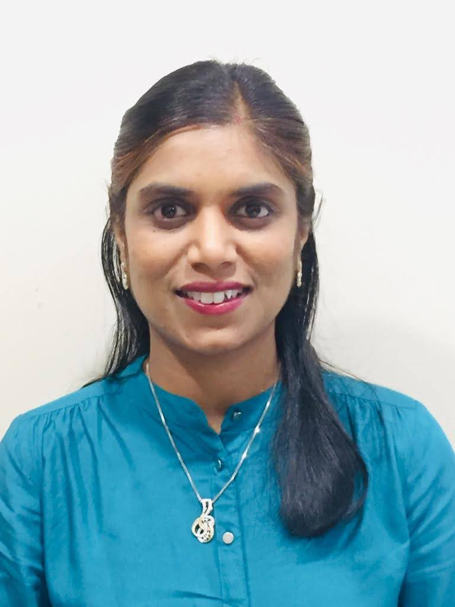

KGI design products that earn trust — through clarity, intent, and a deep understanding of people.
I'm a strategic design leader with 15+ years driving end-to-end product design — from 0-to-1 startup launches to enterprise-scale AI and financial platforms. I've built and led UX teams, shaped product roadmaps, and brought design into the room where it matters: early, often, and with a clear point of view.
I'm currently based in Doha, consulting and mentoring while exploring my next full-time chapter. My career spans Silicon Valley, Bangalore, Mumbai, and Doha — working with teams at the Digital Incubation Center (MCIT) and consulting independently. I hold a Harvard Business School certification in AI for Leaders, and I'm particularly interested in how generative AI is reshaping the way people interact with information and systems.
I believe the best UX is invisible — it removes friction so quietly that users never notice the design, only the outcome.
Design & Research — End-to-End Product Design, UX/UI Architecture, Rapid Prototyping, Usability Testing, Generative & Evaluative Research, User Journeys, Design Systems.
Strategy & Leadership — Zero-to-One Product Development, Agile/Scrum, Cross-Functional Team Leadership, Stakeholder Alignment, Product Strategy, Go-to-Market Support.
Figma · Miro · Jira · UserTesting · Google Analytics
RecognitionExtra Mile Award — Drishti Technologies, Oct 2022
Winner — Kyocera Wireless India Design Competition, 2006
CertificationAI for Leaders — Harvard Business School Online
Independent Consulting · Doha, Qatar
Career Sabbatical & Consulting
Planned pause for international relocation and maternity leave. Founded Tray Design and Strategy, pitching end-to-end UX consulting services. Mentoring UX designers and product teams at the Digital Incubation Center (DIC), MCIT.
Weav.ai · Remote, Mumbai
UX Lead
Partnered with the CEO and founding team to lead UX strategy for an enterprise AI copilot. Spearheaded end-to-end UX/UI for the inaugural MVP — launched within 6 months. Defined and standardised the design system and UI components for seamless engineering handoff.
Drishti Technologies · Bangalore & Mumbai
UX Manager and Lead
Led a team of 5 designers building enterprise software for the manufacturing sector. Architected ML engineering workflows — increasing model fine-tuning efficiency by 8× and saving ~20hrs/month. Overhauled customer onboarding for a 4× speed improvement and 10% churn reduction.
eCHIBA Technologies · Mumbai
UX Architect
Directed all design initiatives for a zero-to-one B2B project collaboration tool. Owned the complete product lifecycle from concept to beta, delivering 10+ core features on schedule. Crafted the brand's visual identity and a scalable design system from scratch.
Axis Bank · Mumbai
UX Manager and Lead
Steered UX for the Axis ASAP product line — 500,000+ app downloads and a manifold increase in account openings. Optimised critical mobile flows (funds transfer, bill pay, credit card) increasing transaction rates by 20%. Pioneered the bank's voice-activated banking interface via Amazon Alexa.
NetApp Inc · Bangalore
Interaction Designer
Redesigned the ONTAP Workflow Automation software — translating complex IT administrator workflows into intuitive UI patterns. Strategic UX audits improved product usability and contributed to increased enterprise customer retention.
frogDesign (Aricent) · Bangalore
Interaction Designer
Delivered premium mobile (iOS, Android) and web applications for global Fortune 500 clients including AT&T and ABB. Led generative user research, usability testing, and synthesis to inform high-fidelity prototypes.
TeleNav Inc · Silicon Valley, US
Interaction Designer
Designed location-based mobile applications — OnMyWay and Whereboutz — integrating complex GPS and social networking features into seamless mobile UI.
PayPal Inc · Silicon Valley, US
Interaction Designer
Designed the PayPal iOS application — an early and formative experience in mobile-first financial product design.
Georgia Institute of Technology · Atlanta, GA
MS Human-Computer Interaction · 2006–2008
Graduate Research Assistant, Synaesthetic Media Lab
Indian Institute of Technology (IIT) · Guwahati
Bachelor of Design, Visual Communication · 2002–2006
Interned at Media Labs Asia, IIT Bombay